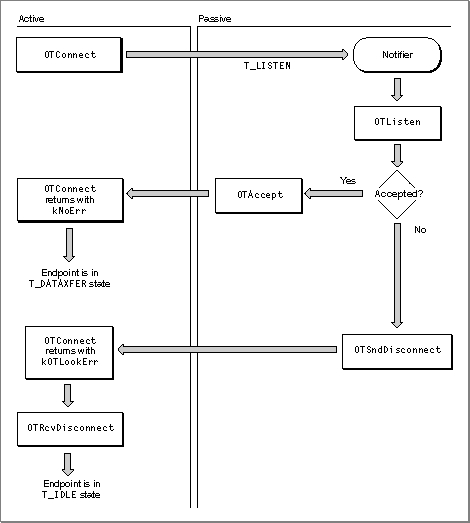
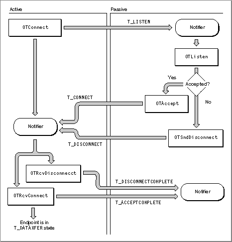
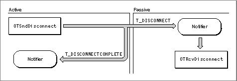
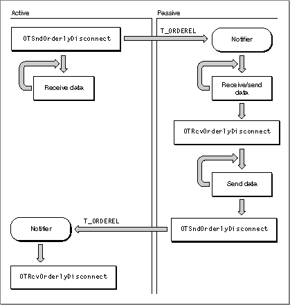
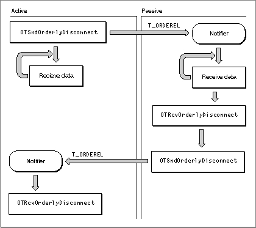
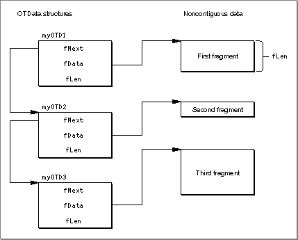
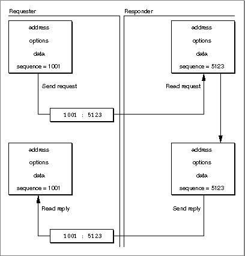
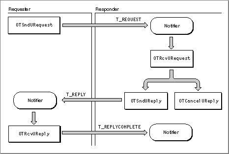
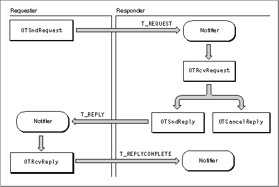

Using Endpoints
This section begins by explaining how you create an endpoint and associate it with an address. Next, it introduces the functions you can use to obtain information about endpoints and discusses some issues relating to asynchronous processing that specifically affect endpoint providers. Then, it explains some issues relating to data transfer that apply to all types of endpoint providers. Finally, it describes how you can implement each mode of service.No matter what mode of service you want to implement, you must read the sections "Opening and Binding Endpoints," "Obtaining Information About Endpoints," "Handling Events for Endpoints," and "Sending and Receiving Data." After you have read these sections, you can read the section describing the mode of service you are interested in implementing. Table 3-5 shows how some of the Open Transport protocols fit with an endpoint's mode of service. For example, if you want to use ATP, you would need to read the section "Using Connectionless Transaction-Based Service," beginning on page 3-39. If you want to use ADSP, you would need to read the section "Establishing and Terminating Connections," beginning on page 3-26 and the section "Using Connection-Oriented Transactionless Service," beginning on page 3-36.
- Note
- The sections that follow present information in such a way as to suggest that communication is always taking place between two Open Transport clients. This does not have to be true. For example, an Open Transport client using a connectionless transactionless DDP endpoint can communicate seamlessly with a client using AppleTalk's DDP protocol and interface. However, because this book is about Open Transport, we always show how communication works between two Open Transport clients.

Opening and Binding Endpoints
Before you can open and bind an endpoint, you must have initialized Open Transport and determined what the endpoint configuration is going to be. Then, you can open and bind the endpoint. You open the endpoint with theOTOpenEndpointorOTAsyncOpenEndpointfunctions. Opening an endpoint with theOTOpenEndpointfunction sets the default mode of execution to be synchronous; opening an endpoint with theOTAsyncOpenEndpointfunction sets the default mode of execution to be asynchronous. You can change an endpoint's mode of execution at any time by calling theOTSetSynchronousorOTSetAsynchronousfunction, which are described in the chapter "Providers" in this book.One of the parameters that you pass to the function used to open the endpoint is a pointer to a configuration structure that Open Transport needs to define the protocol stack providing data transport services. You can use the same configuration for more than one endpoint; however, if you do so, you must use the
OTCloneConfigurationfunction to get a valid copy of the configuration structure. The chapter "Configuration Management," in this book, contains information about creating a configuration structure for an endpoint provider.If you use the
OTAsyncOpenEndpointfunction to open an endpoint, you also specify the entry point to a notifier function that the endpoint provider can
use to call your application when an asynchronous or completion event takes place. If you use theOTOpenEndpointfunction to open an endpoint, and you want to handle asynchronous events using a notifier function, you must
use theOTInstallNotifierfunction to install your notifier function. TheOTInstallNotifierfunction is described in the chapter "Providers" in
this book.Opening an endpoint also sets up a private data structure used by Open Transport to manage the endpoint provider's operations. This data structure contains information about
Some of this information is private; the rest can be retrieved by calling functions that return information about the endpoint. These functions are described in the next section, "Obtaining Information About Endpoints."
- the endpoint's mode of operation, mode of execution, and mode of service
- the size of internal buffers used for sending data and receiving data
- the size of normal transport service data units (TSDUs) and expedited transport service data units (ETSDUs) or, in the case of transactions, the size of replies and requests
- the maximum size of buffers used to hold address and option information for the endpoint
- default option values for the endpoint
When the function you use to open the endpoint returns, it passes back to you an endpoint reference. You must pass this reference as a parameter to any endpoint provider function or any general provider function. For example, you pass this reference as a parameter to the
OTBindfunction, which you must use to bind an endpoint after opening it. Binding an endpoint associates the endpoint with a logical address. Depending on the protocol you use and on your application's needs, you can select a specific address or you can have the protocol choose an address for you. For information about valid address formats, consult the documentation for your protocol. The general rule for binding endpoints is simple: you cannot bind more than one connectionless endpoint to a single address. You can bind more than one connection-oriented endpoint to the same address; for additional information about this possibility, see the section "Processing Multiple Connection Requests" on page 3-29.No matter what mode of service you need to implement, you must know how to obtain information about the endpoints you have opened and how to handle asynchronous and completion events for these endpoints. These issues are addressed in the next two sections, "Obtaining Information About Endpoints" and "Handling Events for Endpoints." After you read these sections, you can proceed by reading about the mode of service you want to implement.
Obtaining Information About Endpoints
You can use endpoint functions to obtain information about an endpoint's mode of service, state, or address. You can also call general provider functions to determine an endpoint's mode of execution and mode of operation:The
- To obtain information about an endpoint's mode of execution, you call the
OTIsSynchronousfunction. The function returns a positive integer to indicate that the endpoint is in synchronous mode, or 0 if it is in asynchronous mode.- To obtain information about an endpoint's mode of operation, you call the
OTIsNonBlockingor theOTIsAckingSendsfunctions.TEndpointInfostructure contains most of the information you need to determine how you can use an endpoint. This structure specifies the maximum size of the buffers you need to allocate when calling functions that return address and option information or data, and it also contains more specific details about the mode of service the endpoint provides. For example, if you have opened a connection-oriented endpoint, theservtypefield of theTEndpointInfostructure specifies whether the endpoint supports orderly release. You can obtain a pointer to this structure when you open the endpoint, when you bind the endpoint, or when you call theOTGetEndpointInfofunction.To obtain information about an endpoint's state, you call the
OTGetEndpointStatefunction. This function returns a positive integer indicating the endpoint state or a negative integer corresponding to a result code. Table 3-2 on page 3-14 lists and describes endpoint states. If the endpoint is in asynchronous mode and you are not using a notifier function, you might be able to use theOTGetEndpointStatefunction to poll the endpoint and determine whether a specific function has finished executing. The completion of some functions result in an endpoint's changing state. For additional information, see Table 3-3 on page 3-16.To obtain address information about an endpoint or its peer, you can use one of the following two functions:
For information about the address formats for the protocol you are using, please consult the documentation supplied for the protocol. For information about obtaining the addresses that correspond to a name pattern, see the chapter "Mappers" in this book.
OTGetProtAddress, which returns the address to which the endpoint is bound. If the endpoint is connection-oriented and currently connected, this function also returns the address to which the endpoint is connected.OTResolveAddress, which returns the lowest-layer protocol address that corresponds to the name of the endpoint. If you are looking up the address that corresponds to a single name, you can use this function rather than having to open the mapper provider and use the mapper functionOTLookUpName.Handling Events for Endpoints
The section about modes of execution in the chapter "Providers" describes the functions you use to determine what a provider's mode of execution is and to change that mode if needed. It also discusses the special problems that might arise in asynchronous processing and recommends ways of handling these problems.Like other providers, endpoint providers can operate synchronously or asynchronously. When possible, you should use endpoints in asynchronous mode. If you do, you need to create a notifier function that the provider can call to inform you when an asynchronous function has completed or when an asynchronous event has arrived. Event handling for endpoints is basically the same as that described for providers in the chapter "Providers." One slight difference lies in the way the endpoint provider generates
T_DATA,T_EXDATA, andT_REQUESTasynchronous events, which signal the arrival of incoming data or of an incoming transaction request. For the sake of efficiency, the provider notifies you just once that incoming data has arrived. To read all the data, you must call the function that clears the event until the function returns with thekOTNoDataErrresult. For information about which functions to use to clear these events, see Table 3-8 on page 3-25.You do not have to issue these calls in the notification routine itself, but until you make the consuming calls and receive a
kOTNoDataErrerror, anotherT_DATA,T_EXDATA, orT_REQUESTevent will not be issued. You should also be prepared for being notified that data is available, but then receiving akOTNoDataErrerror when trying to read the data.One exception to this rule occurs when dealing with transaction protocols. When the client gets a
T_REPLYevent ,OTRcvUReplyis called until akOTNoDataErris returned. If this is deferred from the notification function to the foreground, the following sequence can occur: While the client is busy reading replies in the foreground, a request arrives. This will cause aT_REQUESTevent to be generated. If the foreground client was callingOTRcvUReplyat this point in time, akOTLookErrwill be generated rather than akOTNoDataErr. In this case (and the converse case forT_REQUESTevents), anotherT_REPLYevent will be generated when a new reply arrives.If we look at this operationally, the transport provider has a queue of data or commands to deliver to the client. If the queue is empty when the data or command arrives, a notification is delivered to the client. If the queue is not empty, then no notification is delivered to the client at the time the data or command is queued. Instead, whenever the client reads the data or command at the head of the queue, Open Transport peeks at the next element of the queue, if it exists. If this next element of the queue is of the same type as what was at the head of the queue, no event is generated. If there is a difference, a new event is delivered to the client. This new event is typically delivered to the client just prior to returning from the function which removed the head element of the queue.
Not all endpoint functions are affected by an endpoint's mode of execution. Those functions that do behave differently when they are executed asynchronously are listed in Table 3-6. For each function, the table lists the corresponding completion event.
For compatibility with the XTI standard, Open Transport also includes the endpoint provider function
OTLook. You can use theOTLookfunction
- to poll for asynchronous events, like incoming data or connection requests
- to determine the cause of a
kOTLookErrresultAsynchronous functions can return this result. In addition, asynchronous events that require immediate attention can cause some synchronous functions to fail with the
kOTLookErrresult. In this case, you can call theOTLookfunction to determine the event that caused the function to fail. Table 3-7 lists the functions that can return the resultkOTLookErrwhen the corresponding event is pending.Having used the
OTLookfunction to determine what asynchronous event caused your function to fail, you must call one of the functions listed in Table 3-8 to clear the event, and then you can retry the function that failed.Establishing and Terminating Connections
To implement a connection-oriented service, you must complete the
following steps:The following sections explain how you establish and terminate a connection. The functions you use to establish and terminate a connection are the same for transactionless as for transaction-based service. The calls you use to transfer data differ depending on which mode of service you choose--transactionless or transaction-based. The section "Using Connection-Oriented Transactionless Service" on page 3-36 explains how you transfer data once you have established a connection. In the text that follows, active peer refers to the endpoint initiating a connection; passive peer refers to the endpoint accepting a connection request.
- establish a connection
- process any data associated with establishing the connection if this is permitted for the endpoint
- transfer data
- terminate the connection when you are finished transferring data
Before you can use a connection-oriented endpoint to initiate or accept a connection, you must open and bind the endpoint. For example, if you are using AppleTalk, you might open an ADSP endpoint, which offers connection-oriented transactionless service. You don't have to do anything special to bind an endpoint that is intended to be the active peer of a connection. However, when you bind an endpoint intended to be the passive peer of a connection, you must specify a value for the
qlenfield of thereqAddrparameter for theOTBindfunction. Theqlenfield indicates the number of outstanding connection requests that can be queued for that endpoint. Note that the value you specify indicates the desired value. Open Transport might negotiate a lower value, depending upon the number of internal buffers available. The negotiated value of outstanding connection indications is returned to you in theqlenfield of theretAddrparameter for theOTBindfunction.You are allowed to bind multiple connection-oriented endpoints to a single address. However, only one of these endpoints can accept incoming connection requests. That is, only one endpoint can specify a value for
qlenthat is greater than 0. For more information, see the section "Processing Multiple Connection Requests" on page 3-29.Establishing a Connection
You use the following functions to establish a connection:Figure 3-3 illustrates the process of establishing a connection in
synchronous mode.Figure 3-3 Establishing a connection in synchronous mode

As Figure 3-3 shows, if the active peer is in synchronous mode, the
OTConnectfunction does not return until the connection has been established or the connection attempt has been rejected. If the passive peer has a notifier function installed, the endpoint provider calls it, passingT_LISTENfor thecodeparameter. The notifier calls theOTListenfunction, which reads the connection request. The passive peer can now either accept the connection request using theOTAcceptfunction or reject the request by calling theOTSndDisconnectfunction. The connection attempt might also fail if the request is never received and the endpoint provider times out the call to theOTConnectfunction.If the passive peer calls the
OTAcceptfunction to accept the connection, theOTConnectfunction returns withkNoErr. If the passive peer rejects the connection by executing theOTSndDisconnectfunction or the request is timed out, theOTConnectfunction returns withkOTLookErr. When theOTConnectfunction returns, the active peer must examine the result and, depending on the outcome, either begin to transfer data if the function succeeds or call theOTRcvDisconnectfunction if the function fails. The active peer must call theOTRcvDisconnectfunction to restore the endpoint to a valid state for subsequent operations. Note that even though the passive peer is in a synchronous state, you can use a notifier function to be called in case of aT_LISTENevent. Alternately, you could also use theOTLookfunction to poll the passive endpoint for aT_LISTENevent.If the active peer is in asynchronous mode, the
OTConnectfunction returns right away, and the active peer must rely on its notifier function to determine whether the call succeeded. Figure 3-4 illustrates the process of establishing a connection when the active peer is in asynchronous mode.Figure 3-4 Establishing a connection in asynchronous mode

The active peer calls the
OTConnectfunction, which returns right away with a code ofkOTNoError. The endpoint provider calls the passive peer's notifier, passingT_LISTENfor thecodeparameter. If the passive peer accepts the connection, the endpoint provider calls the active peer's notifier, passingT_CONNECTfor thecodeparameter.If the passive peer rejects the connection or if the connection times out, the endpoint provider calls the active peer's notifier, passing
T_DISCONNECTfor thecodeparameter. The active peer must then call either theOTRcvConnectfunction in response to aT_CONNECTevent or theOTRcvDisconnectfunction in response to aT_DISCONNECTevent. The endpoint provider, in turn, passes theT_ACCEPTCOMPLETEevent back to the passive peer (for a successful connection) or theT_DISCONNECTCOMPLETEevent (for a failed connection). The passive peer requires the information provided by these two events to determine whether the connection succeeded.Sending User Data With Connection or Disconnection Requests
TheOTConnectfunction and theOTSndDisconnectfunction both pass data structures that include fields for data that you might want to send at the time that you are setting up or tearing down a connection. However, you can only send data when calling these two functions if theconnectanddisconfields of theTEndpointInfostructure specify that the endpoint can send data with connection or disconnection requests. The amount of data sent must not exceed the limits specified by these two fields. To determine whether the endpoint provider for your endpoint supports data transfer during the establishment of a connection, you must examine theconnectanddisconfields of theTEndpointInfostructure for the endpoint.Processing Multiple Connection Requests
If you process multiple connection requests for a single endpoint, you must make sure that the number of outstanding connection requests does not exceed the limit defined for the listening endpoint when you bound that endpoint. An outstanding connection request is a request that you have read using theOTListenfunction but that you have neither accepted nor rejected. You must also decide whether to accept connections on the same endpoint that is listening for the connections or on a different endpoint.When you bind the passive endpoint, you must specify a value greater than 0 for the
qlenfield of thereqAddrparameter to theOTBindfunction. This value indicates the number of outstanding connections that the provider can queue for this endpoint. Note that Open Transport might negotiate this number to a lower value. If it does, the negotiated value is returned in theqlenfield of theretAddrparameter when theOTBindfunction returns. As you process incoming connection requests, you must check that the number of connections still waiting to be processed does not exceed this negotiated value for the listening endpoint. How you do this depends on the number of outstanding requests and on whether you are accepting connection requests on the same endpoint as the endpoint listening for requests or accepting them on a different endpoint. Connection acceptance is governed by the following rules:What these rules add up to in practical terms is that if you anticipate managing more than one connection at a time, you should open an endpoint to listen for connections and then open additional endpoints as needed to accept incoming connections. The decision of whether to bind the additional endpoints to the same address or to a different address is affected only by the availability of endpoints to your application.
- You can bind more than one connection-oriented endpoint to the same address, but you can use only one of these endpoints to listen for connection requests.
- If you accept a connection on the same endpoint that is listening for connection requests, you must have responded to all previous connection requests received on the endpoint using
OTAcceptorOTSndDisconnectfunctions. Otherwise, theOTAcceptfunction fails. If you have not responded to all previous connection requests, you should accept the connection on a different endpoint.If you accept a connection on the same endpoint that received the connection request and there are outstanding connection or disconnection indications for that endpoint, the
OTAcceptfunction fails.- If you accept a connection on an endpoint that is different from the endpoint that received the connection request, you do not have to bind the endpoint to which you are passing off the connection. If the endpoint is not bound, the endpoint provider automatically binds it to the address of the endpoint that listened for the connection request.
If you choose to explicitly bind the endpoint accepting the connection to the address of the endpoint listening for the connection, you must set the
qlenfield of thereqAddrparameter to theOTBindfunction to 0.Terminating a Connection
You can terminate a connection using either an abortive or orderly disconnect. During an abortive disconnect, the connection is torn down without the underlying protocol taking any steps to make sure that data being transferred has been sent and received. When the client calls theOTSndDisconnectfunction, the connection is immediately torn down, and the client cannot be sure that the provider actually sent any locally buffered data. During an orderly disconnect, the underlying protocol ensures at least that all outgoing data is actually sent. Some protocols go further than this, using an over-the-wire handshake that allows both peers to finish transferring data and agree to disconnect. The following sections describe the steps required for abortive and orderly disconnects.Using an Abortive Disconnect
You use theOTSndDisconnectandOTRcvDisconnectfunctions to perform an abortive disconnect. Figure 3-5 illustrates the process for two asynchronous endpoints. The figure shows the active peer initiating the disconnection; in fact, either endpoint can initiate the disconnection.Figure 3-5 An abortive disconnect

In asynchronous mode, the endpoint initiating the disconnection calls the
OTSndDisconnectfunction. Parameters to the function identify the endpoint and point to aTCallstructure that is only of interest if the endpoint provider supports sending data with disconnection requests. To determine whether your protocol does, you must examine the value of thedisconfield of theTEndpointInfostructure for your endpoint. If you do not want to send data or if you cannot send data to the passive peer, you can setTCallto aNULLpointer.The endpoint provider receiving the disconnect request calls the passive peer's notifier function, passing
T_DISCONNECTfor thecodeparameter. The client must acknowledge the disconnection event by calling the functionOTRcvDisconnect. This function clears the event and retrieves any data sent with the event. Parameters to theOTRcvDisconnectfunction identify the endpoint sending the disconnection and point to aTDisconstructure that is only of interest if the endpoint provider supports sending data with disconnection requests or if the passive peer is managing multiple connections and needs to inform the active peer which of the connections has been closed by using thesequencefield of theTDisconstructure. Otherwise, you can setTDisconto aNULLpointer. When the connection has been closed, the endpoint provider calls the active peer's notifier, passingT_DISCONNECTCOMPLETEfor theeventparameter. At this time the endpoint is once more in theT_IDLEstate.Using Orderly Disconnects
There are two kinds of orderly disconnects: remote orderly disconnects and local orderly disconnects. The first kind, supported by TCP, provides an over-the-wire (three-way) handshake that guarantees that all data has been sent and that both peers have agreed to disconnect. The second kind, supported by ADSP and most other connection-oriented transactionless protocols, is a locally implemented orderly release mechanism ensuring that data currently being transferred has been received by both peers before the connection is torn down. To determine whether your protocol supports orderly disconnects, you must examine theservtypefield of theTEndpointInfostructure for the endpoint. A value ofT_COTS_ORDorT_TRANS_ORDindicates that the endpoint supports orderly release. It is safest to assume, unless you know for certain it to be otherwise, that the endpoint supports only local orderly disconnects.Figure 3-6 shows the steps required to complete a remote orderly disconnect. The figure shows the active peer initiating the disconnection; in fact, either peer can initiate the disconnection.
Figure 3-6 Remote orderly disconnect

The active peer initiates the disconnection by calling the
OTSndOrderlyDisconnectfunction to begin the process and to let the remote endpoint know that the active peer will not send any more data. (Following the call to this function, the active peer can receive data but it cannot send any more data.) The provider calls the passive peer's notifier function, passingT_ORDRELfor thecodeparameter. In response, the passive peer must read any unread data and can send additional data. After it has finished reading the data, it must call theOTRcvOrderlyDisconnectfunction to acknowledge receipt of the orderly release indication. After calling this function, the passive peer must not attempt to read any more data; however, it can continue to send data. When the passive peer is finished sending any additional data, it must call theOTSndOrderlyDisconnectfunction to complete its part of the disconnection. Following this call, it cannot send any data. The endpoint provider calls the active peer's notifier, passingT_ORDRELfor thecodeparameter, and the active peer calls theOTRcvOrderlyDisconnectfunction to acknowledge receipt of the disconnection event and to place the endpoint in theT_IDLEstate if this was the only outstanding connection.Figure 3-7 shows the steps required to complete a local orderly disconnect.
Figure 3-7 A local orderly disconnect

As you can see, the sequence of steps is very similar to that shown in Figure 3-6. The main difference is that the connection is broken as soon as the active peer calls the
OTSndOrderlyDisconnectfunction. As a result, either peer can continue to read any unread data, but neither peer can send data after the initial call to theOTSndOrderlyDisconnectfunction.Sending and Receiving Data
This section describes some of the issues that affect send and receive operations inasmuch as these issues affect every type of endpoint. After you read this section, you can read whichever section describes the type of data transfer you are interested in.Sending Noncontiguous Data
When sending data, you normally use aTNetbufstructure to specify the location and size of the buffer containing the data to be sent. Open Transport also allows you to send data that is not contiguous; however, you need to use a different structure to specify the location of the data fragments in memory. This structure is called theOTDatastructure.Figure 3-8 shows how you use
OTDatastructures to describe noncontiguous data. The first structure,myOTD1, contains information about the first data fragment: thefDatafield contains the starting address of the fragment, and thefLenfield contains the length of the fragment. The fieldfNextcontains the address of theOTDatastructure,myOTD2, which specifies the size and location of the second fragment. In turn, the structuremyOTD2, contains the address of theOTDatastructure that specifies the location and size of the third fragment. You must set thefNextfield of theOTDatastructure used to describe the last data fragment toNULL.Figure 3-8 Describing noncontiguous data

Sending Data Using Multiple Sends
If you are sending a data unit using multiple sends, you must do the following:Even though you are using multiple sends to send the data, the total size of the data sent cannot exceed the value specified for the
- Set the
T_MOREbit in the flags field each time you call the function. This lets the provider know that it has not yet read the entire data unit.- Clear the
T_MOREbit the last time you call the function. This lets the provider know that the data unit is complete.tsdufield (for normal data or replies) oretsdufield (for expedited data or requests) of theTEndpointInfostructure for the endpoint.Sending data using multiple sends does not necessarily affect the way in which the remote client receives the data. That is, just because you have used several calls to a send function to send data does not mean that the remote client must call a receiving function several times to read the data.
Receiving Data
If you are reading data and if theT_MOREbit in the flags field is set, this means that the buffer you have allocated to hold the data is not big enough. You must copy the data you have already received to a different buffer and then call the receive function again to read more data until theT_MOREbit is cleared, which indicates that you have read the entire data unit.No-Copy Receiving
Open Transport allows you to receive data without doing the extra copying that is normally involved in receiving data, which can save time and resources. For example, you might have received some data that needs to be written to disk and you have four files, each with a different buffer, that are expecting data. Normally what you would do is store the data into a temporary buffer while you determined which of the four files was the right destination. When you identified the target, you'd then copy the data from the temporary buffer into that file's buffer.A no-copy receive allows you to peek at the data when you receive it and write it out immediately. Open Transport does this by giving you access to a special no-copy receive buffer,
OTBuffer. To take advantage of this buffer, it is absolutely crucial that you
- don't touch it
- release it quickly
- only release it once; don't release it multiple times
You need to release the no-copy receive buffer (with the
- WARNING
- The no-copy receive buffer is read-only and you must never under any circumstances attempt to write to it. if you write to it, you can crash the system.
OTReleaseBufferfunction) as soon as you are finished using it so that are not tying up system resources required elsewhere. If you hold onto the buffer, one consequence is that your Ethernet driver starts making its own copies as it receives more data, and if it isn't well designed, it may run out of space and lose packets.The no-copy receive buffer is actually a linked chain of buffers, with the next buffer pointed to by the
fNextfield in each buffer. You can access all of the received data by tracing the chain offNextpointers. For your convenience, Open Transport provides theOTBufferInfostructure and the utility functions,OTReadBufferandOTBufferDataSize, to read through theOTBufferstructure.Transferring Data Efficiently
Some protocols support XTI-level options that you can use to change the size of Open Transport's internal send and receive buffers and to change the size of the "low-water mark" that Open Transport uses to determine how much data should accumulate in these buffers before it sends the data or lets the client know that data has arrived. If your protocol supports these options, you can reset these values to fit your application's needs. For more information, see the section describing XTI-level options in the chapter "Option Management" in this book.Transferring Data Between Transactionless Endpoints
Open Transport defines two sets of functions that you can use to send and receive data. You use one set with connectionless service and the other with connection-oriented service.Using Connectionless Transactionless Service
You use connectionless transactionless service, as provided by AppleTalk's DDP for example, to send and receive discrete data packets. Most often applications use higher-level protocols that depend, in turn, upon more basic protocols that use connectionless transactionless service. For example, all of AppleTalk's higher-level protocols make use of DDP to send and receive data.After opening and binding a connectionless transactionless endpoint, you can use three functions to send and receive data:
Either endpoint can send or receive data. However, the endpoint sending data cannot determine whether the other endpoint has actually received the data.
- the
OTSndUDatafunction to send data- the
OTRcvUDatafunction to receive data- the
OTRcvUDErrfunction to determine why a send operation did not succeedSome endpoints are not able to determine that the specified address or options are invalid until after the data is sent. In this case, the sender's endpoint provider issues the
T_UDERRevent. You should include code in your notifier function that calls theOTRcvUDErrfunction in response to this event to determine what caused the send function to fail and to place the sending endpoint in the correct state for further processing.If the endpoint receiving data has allocated a buffer that is too small to hold the data, the
OTRcvUDatafunction returns with theT_MOREbit set in theflagsparameter. In this case, you should call theOTRcvUDatafunction repeatedly until theT_MOREbit is cleared.Using Connection-Oriented Transactionless Service
You use connection-oriented transactionless service, such as provided by ADSP, to exchange full-duplex streams of data across a network. Connection-oriented transactionless endpoints use theOTSndfunction to send data and theOTRcvfunction to receive data. Either endpoint can call either of these functions. Parameters to theOTSndfunction identify the endpoint sending the data, the buffer that holds the data, the size of the data, and aflagsvalue that specifies whether the data sent is normal or expedited and whether multiple sends are being used to send the data. Parameters to theOTRcvfunction identify the receiving endpoint, the area in memory where the data should be copied, the size of the data, and aflagsvalue that specifies whether the client needs to callOTRcvmore than once to retrieve the data being sent.Some endpoints support the use of expedited data, and some support the use of separators to break the data stream into logical units. You need to examine the endpoint's
TEndpointInfostructure to determine if the endpoint supports either of these features:
- The
etsdufield of theTEndpointInfostructure specifies whether the endpoint supports the use of expedited data and, if so, specifies its size. For example, ADSP supports the use of expedited data to send attention messages between peer endpoints. In general, it is recommended that you do not use expedited data because doing so results in code that is not transport independent.- The
tsdufield of theTEndpointInfostructure specifies the maximum size of normal data that the endpoint can send or receive. In those cases where the endpoint supports the breaking up of the data stream into logical units, the TSDU size specifies what the maximum size of any such unit may be.To send expedited data, you must set the
- IMPORTANT
- Values for the
tsduandetsdufields of theTEndpointInfostructure that are returned when you open an endpoint might change after the endpoint is connected because the endpoint providers can negotiate different values when establishing a connection. If the endpoint supports variable maximum limits for TSDU and ETSDU size, you should call theOTGetEndpointInfofunction after the connection has been established to determine what the current limits are.T_EXPEDITEDbit in theflagsparameter. If the receiving client is in the middle of reading normal data and theOTRcvfunction returns expedited data, the nextOTRcvthat returns withoutT_EXPEDITEDset in the flags field resumes the sending of normal data at the point where it was interrupted. It is the responsibility of the client to remember where that was.There are several ways of breaking up a data stream into logical size units.
- If the endpoint supports it, enable the use of the
T_MOREflag to theOTSndfunction. For example, using ADSP, you can do this by setting theEOMoption when you connect the endpoints. Sending data with theT_MOREbit set informs the receiving endpoint that the TSDU is being sent using multipleOTSndcalls. When sending the last packet, do not set theT_MOREbit. Because these packets are guaranteed to be delivered in the order sent, the receiving endpoint can determine when the last packet has arrived by examining
the flags.- If the endpoint supports it, send a zero-length TSDU to indicate the end of a TSDU. The receiving endpoint needs to test the
nbytesfield of theOTSndfunction to determine if this is the last transmission. To determine whether the endpoint supports this feature, you need to examine theflagsfield of theTEndpointInfostructure; zero-length TSDUs are supported if theT_SENDZERObit is set.- Use the data transferred with your first send to specify the name and size of the file that you want to send. The receiving endpoint can save the size value and decrement it by the value specified by the
nbytesparameter of each subsequent send until the number equals 0. This last method is the only one that is transport-independent.Transferring Data Between Transaction-Based Endpoints
Open Transport defines two sets of functions that you can use to conclude a transaction. One set is defined for connectionless transactions; the other set is defined for connection-oriented transactions. A transaction is a process during which one endpoint, the requester, sends a request for a service. The remote endpoint, called the responder, reads the request, performs the service, and sends a reply. When the requester receives the reply, the transaction is complete.You can implement applications that use transactions in the following
two ways:Because one endpoint can conduct multiple transactions at any one time, it is crucial that requesters and responders be able to distinguish one transaction from another. This is done by means of a transaction ID, a number that uniquely identifies a transaction. Because this is not the same number for the requester as it is for the responder, some explanation is required. Figure 3-9 shows how the transaction ID is generated by the requesting application and the provider during the course of a transaction.
- You can write a single application that handles both the requester and responder actions of a transaction and run that application on two networked nodes. This method allows each application to act as either the requester or the responder. Either side can initiate a transaction, but only one side can control the communication during a single transaction.
- You can write two applications, one implementing the requester part of a transaction and the other implementing the responder side. This model lends itself well to a client-server relationship, in which many nodes on a network run the requester application (client), while one or more nodes run the responder application (server); one server can respond to transaction requests from several clients.
Figure 3-9 How a transaction ID is generated

The requester initiates a transaction by sending a request. The requester passes information about the request in a data structure that includes a
seqfield, which specifies the transaction ID of the request. The requester initializes this field to some arbitrary, unique number. Before sending the request, the endpoint provider saves this number in an internal table and assigns another number to theseqfield, which it guarantees to be unique for the requester's machine. The endpoint provider also saves the new number along with the requester-generated sequence number. For example, in Figure 3-9, the requester assigns the number 1001; the endpoint provider assigns the number 5123.When the responder receives the request, it reads the request information, including the provider-generated sequence number, into buffers it has reserved for the request data. When the responder sends a reply, it specifies the sequence number it read when it received the request.
Before the requester's endpoint provider advises the requester that the reply has arrived, it examines the sequence number of the reply and looks in its internal table to determine which requester-generated sequence number it matches. It then substitutes that number for the sequence number it received from the responder. By using this method Open Transport guarantees that transactions are uniquely identified, and the requester is able to match incoming replies with outgoing requests.
Using Connectionless Transaction-Based Service
You use connectionless transaction-based service, such as provided by ATP, to enable two connectionless endpoints to complete a transaction.The requester initiates the transaction by calling the
OTSndURequestfunction. Parameters to theOTSndURequestfunction specify the destination address, the request data, any options, and a sequence number to identify this transaction. The requester must supply a sequence number if it is sending multiple requests, so that later on it can match replies to requests. The requester can cancel an outgoing request by calling theOTCancelURequestfunction. A requester can implement its own timeout mechanism by installing a Time Manager task and calling theOTCancelURequestfunction after a specific amount of time has elapsed without a response to the request.If the responder is synchronous and blocking, the
OTRcvURequestfunction returns after it has read the request. If the responder is asynchronous or not blocking and has a notifier installed, the endpoint provider calls the notifier, passingT_REQUESTfor thecodeparameter. When the responder receives this event, it must call theOTRcvURequestfunction to read the request. On return, parameters to theOTRcvURequestfunction specify the address of the requester, option values, the request data, flags information, and a sequence number to identify the transaction. When the responder sends a reply to the request, it must use the same sequence number for the reply. If the responder's buffer is too small to contain the request, the endpoint provider sets theT_MOREbit in theflagsparameter. The responder must call theOTRcvURequestfunction until theT_MOREbit is clear. This indicates that the entire request has been read.Having read the request, the responder can reply to the request using the
OTSndUReplyfunction or reject the request using theOTCancelUReplyfunction. Although the requester is not advised that the responder has rejected a request, it's important that the responder explicitly cancel an incoming request in order to free memory reserved by theOTRcvURequestfunction.If the requester is in synchronous blocking mode, the
OTRcvUReplyfunction waits until a reply comes in. Otherwise, if a notifier is installed, the endpoint provider calls the notifier, passingT_REPLYfor thecodeparameter. The notifier must call theOTRcvUReplyfunction. On return, parameters to the function specify the address of the endpoint sending the reply, specify option values, flag values, reply data, and a sequence number that identifies the request matching this reply. If theT_MOREbit is set in theflagsparameter, the requester has allocated a buffer that is too small to contain the reply data. The requester must call theOTRcvUReplyfunction until theT_MOREbit is clear; this indicates that the complete reply has been read.If the request is rejected or fails in some other way, the requester receives the
T_REPLYevent. However, theOTRcvUReplyfunction returns with the resultkETIMEDOUTErr. Otherwise, the only useful information returned by the function is the sequence number of the request that has failed.Figure 3-10 illustrates how connectionless transaction-based endpoints in asynchronous mode exchange data.
Figure 3-10
Data transfer using connectionless transaction-based endpoints in asynchronous mode
Using Connection-Oriented Transaction-Based Service
Connection-oriented transaction-based endpoints allow you to transfer data in exactly the same way as connectionless transaction-based endpoints except that, because the endpoints are connected, it is not necessary to specify an address when using the functions to send and receive requests and replies. The only other difference is that a connection-oriented transaction may be interrupted by a connection or disconnection request.The section "Using Connectionless Transaction-Based Service," beginning on page 3-39 describes the sequence of functions used to transfer data using a transaction. Figure 3-11 shows the sequence of functions called during a connection-oriented transaction; both requester and responder are in asynchronous mode. This sequence is the same as for connectionless transaction-based service, as shown in Figure 3-10 on page 3-41. Of course, you use different functions to complete these two types of transactions: the names of the functions shown in Figure 3-11 do not include a "U" in the function name.
Figure 3-11
Data transfer using connection-oriented transaction-based endpoints in asynchronous model
For information about how to handle disconnection requests that might occur during a transaction, see "Using Orderly Disconnects," beginning on page 3-31.